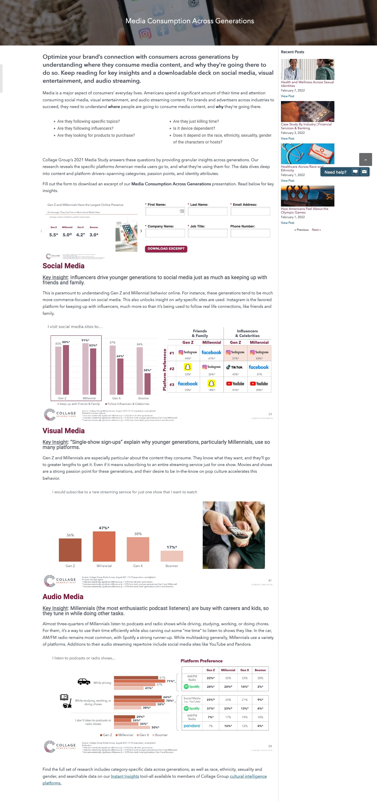
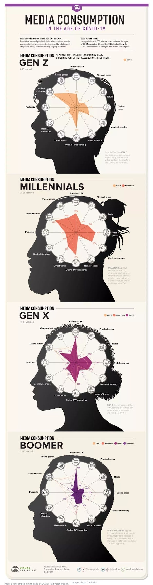

Media Consumption Across Generations
Collage Group
This page does a solid job not making anything overly complicated
while still using color to keep it interesting. From the UI you get
a feeling that they have put in effort to make this an enjoyable
site to use but the focus is on the data.

How COVID-19 has changed media habits in each generation
World Economic Forum
This is a screenshot of the data presentation from a page that
focuses more on design and being visually impressive rather than
pure data and analysis. To be clear this isnt bad because it likely
is more enticing to the reader and in todays world people very
quickly click off of things that seem boring to them. While this
heavy design may detract from the glance value it keeps the reader
engaged for longer which may offset any losses in clarity.